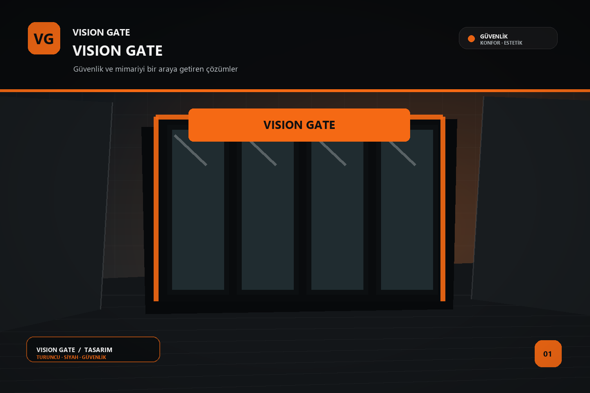

81ilde keşif ve uygulama
için çözüm ortağınız
için çözüm ortağınız
Vision Gate hakkında
Her girişte
Her girişte
güven veren işçilik.
Vision Gate, yapıların güvenliğini ve kullanım konforunu yükselten sistemleri bir araya getirir. İhtiyacı doğru anlayan keşif yaklaşımı, özenle seçilen ürünler ve titiz montajla her projede uzun ömürlü bir sonuç hedefler.
- Projenin kullanımına ve mimarisine uygun sistem seçimi
- Detaylara önem veren, planlı montaj süreci
- Keşiften satış sonrası desteğe uzanan çözüm ortaklığı